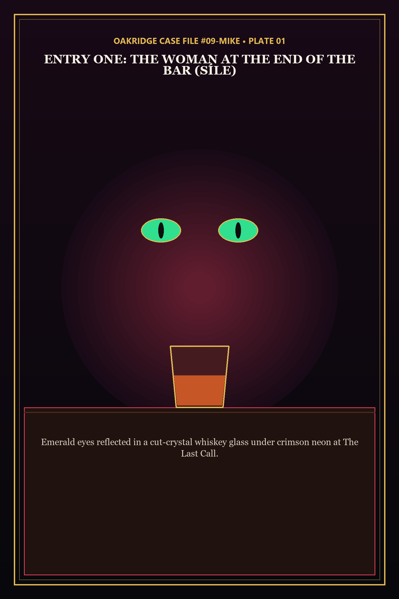

The Chronicles of Mike: Book 1 — The Last Call Sessions
🎧 Studio Noir Audio Preview:

A series of journal entries written under psychiatric evaluation
ENTRY ONE: The Woman at the End of the Bar
Patient: Michael [REDACTED]
Date Written: [illegible]
Facility: Oakridge Behavioral Health Center
The doctor said writing it down would help. He thought that if I put these stories on paper, I'd see how absurd they were — that my mind would finally catch up with reality and recognize the delusions for what they are.
He doesn't understand. The problem isn't that I can't tell fantasy from fact. The problem is that everything I've been writing is fact.
It started at a place called The Last Call—some dive bar past the county line where the pavement gives way to gravel, smelling of stale beer and bad decisions. I was alone, drunk enough to be careless but not enough to be stupid. There was only one seat left at the end of the bar, right next to a man who looked like he'd been carved out of granite and left out in the rain for eighty years.
He was enormous. Not fat—dense. Every inch of him was packed muscle wrapped in weathered skin, his shoulders wide enough to block out the neon sign flickering behind the bottles. His hands were the size of dinner plates, scarred and calloused like he'd spent a lifetime gripping things that fought back. He had a grey beard that reached his chest and eyes the colour of old iron.
I sat down. Ordered a whiskey. Tried to forget I was sitting next to what looked like a retired sumo wrestler.
Then I saw her.
She was standing near the pool tables, talking to some guy who looked like he'd already lost three arguments with his liver. She wasn't just beautiful—she was devastating. The kind of woman who walks into a room and makes every man forget what they were going to say. Dark hair that fell past her shoulders, lips painted the colour of a fresh wound, eyes that caught the dim light and held it hostage.
My feet moved before my brain could stop them. I was halfway out of my stool when a hand landed on my back.
It felt like a door slamming shut.
The old man's palm pressed down with enough force to pin me in place—not painful, just absolute. Like trying to stand up while the earth itself had decided you should sit.
"I know what you're about to do," he said, his voice low and gravelly, like stones grinding together deep underground. "And you don't want to mess with her."
I laughed. I actually laughed. "She's a woman. Not a loaded gun."
The old man turned his head slowly, those iron-grey eyes locking onto mine. There was something in them that made my laughter die in my throat—not menace exactly, but weight. Like he'd seen things stretch across distances so vast they had no name.
"Sit down," he said. And I did.
He ordered a drink—something dark and neat—and for a long while we sat in silence. The bar was loud around us, but next to him it felt like the noise existed somewhere else, in another room entirely. Then he started talking.
Her name was Síle, he said. She lived in County Clare, Ireland—a small village near the cliffs where the Atlantic throws itself against the rock every night like it's trying to break through.
She had a husband. A man named Ciarán. He wasn't cruel—not at first. But he was weak, and weakness is its own kind of cruelty. He started drinking too much, came home late with other women's perfume on his clothes, laughed when she confronted him like her pain was a joke he'd already heard.
The last time, she found him at a pub in Ennis—sitting at a table with another woman. Some girl half Síle's age, laughing at something Ciarán said like the world hadn't already ended between them.
Something cracked inside the old man's voice when he said that word. Jealous. Like it was too small a word for what she felt.
She lost it, he continued. Walked right up to their table and started screaming at him—calling him every name she could think of. The pub went quiet. Ciarán stood up, grabbed her arm, and dragged her out through a side door into the alley behind the building.
It was raining. Cold Irish rain that soaked through everything. He threw her down onto the wet cobblestones and she came at him like an animal—punching, kicking, biting, screaming his name over and over while blood ran from a split lip mixing with the rain on her face. She hit him as hard as she could, again and again, but he was bigger, stronger. He took it for maybe ten seconds before he started hitting back.
By the time he was done, she was lying in a puddle of blood and rainwater, broken ribs, split lip, one eye swelling shut, gasping for air that wouldn't come. Ciarán stood over her breathing hard, then turned and walked back inside like nothing had happened.
That's when he appeared.
Out of the shadows between two brick walls, stepping into the alley like he'd been waiting there all along.
The old man paused. His eyes drifted past me, across the bar, to a corner table where a man sat alone. He was unassuming—average height, average build, wearing a faded jacket and drinking a beer like any other Tuesday night. But when the old man looked at him, something shifted in his posture. A tension. Respect? Fear? I couldn't tell.
The man in the corner caught my eye and gave me a small nod before going back to his drink.
He walked into that alley like he owned it, the old man said. Tall, dark suit, face you couldn't quite remember five seconds after looking away. He knelt beside Síle as she lay dying and said four words that changed everything:
"I can help you."
She was delirious with pain and rage and blood loss. She didn't care about the cost.
"What do you want from me?" she whispered.
The old man's jaw tightened. "Everything," he told her. "You'll serve me for the remaining days of your life. All of them."
She agreed. Of course she agreed. She was dying.
He put his hand on her forehead and something ancient poured into her—something that made her bones snap back into place, her wounds close, her blood run hot and thick with power. When she opened her eyes again, the alley looked different. Everything looked different. She could feel the pulse of every living thing inside the pub above them—the fear, the desire, the hunger—and she understood, suddenly, how to use it.
He gave her beauty that could stop a heart. He gave her strength that could break stone. And he gave her a purpose.
Ciarán had walked back inside through the side door, heading for the main room. She stood up and followed him—the man right behind her like a shadow given form. Ciarán sat down at his table, still drinking, still laughing with whoever was left from before, completely unaware that death had just been reborn in an alley thirty feet away.
She didn't even have to try, the old man said. She walked through that door and every man in the room turned their heads. Ciarán stood up, his eyes wide, his mouth opening and closing like a fish on a hook. She crossed the room and grabbed him by the throat with one hand—just one—and lifted him off his feet.
The old man's voice dropped to barely a whisper. She beat him until he couldn't defend himself anymore. Until every blow he'd ever landed on her was repaid tenfold. The other men in the bar didn't move. They just watched, frozen, like they were watching something that wasn't real—something from a nightmare they couldn't wake up from.
When she was done, Ciarán lay on the floor broken and whimpering. She turned to leave.
But he stopped her at the door.
The old man's eyes flicked back to the corner table. The unassuming man was still there, sipping his beer like he hadn't just been described orchestrating a massacre from beyond the grave.
"Now you have to kill him," the man said.
She shook her head. "I never intended to kill him."
The old man leaned forward and I could see something in his face—something that looked almost like pity. "This is part of our bargain," he told her. His voice was gentle, almost kind, which made it worse. "You serve me now for the rest of your days. You will find men. You will seduce them. And while the taint of sin is still on their souls—you'll kill them so I may collect what's mine."
She had no choice.
The old man sat back and finished his drink in one long pull. He set the glass down carefully, like the bar itself might shatter if he wasn't gentle.
"That's why you don't mess with her," he said quietly. "That woman has been collecting souls for longer than most civilizations have been collecting history."
I stared at him. My mouth was dry. "You're saying she's a—"
"A succubus?" He almost smiled. It wasn't a nice smile. "Something like that."
From the corner table, the unassuming man called out without looking up from his beer: "Technically speaking, Kris, she's more of a lamia these days. The whole succubus thing was just the onboarding package."
The old man—Kris—didn't even turn around. "Shut up, Steve."
Steve chuckled. It was a warm sound. Friendly. Which somehow made it worse.
I walked home that night without remembering much of the way. My whiskey must have done its job after all. But I kept thinking about how easy it would have been to walk past her—how one hand on my back and I couldn't have moved even if I'd wanted to. And how strange it felt, standing there while a man I'd never met told me the backstory of someone who walked through that bar like she owned the place.
Like he'd known her longer than anyone else in the room. Like he'd been watching her do this for longer than either of them had been alive.
I wrote the rest down in my journal the next morning, before the hangover could convince me I was making it up. Before I could talk myself out of what I knew to be true.
End Entry One.